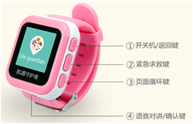

PT-720儿童智能手表使用手册
封面

①.开关机/返回键：长按开机/关机 ，短按返回主界面
②.紧急求救SOS键：单击进入SOS界面，进入SOS界面后，长按SOS键拨打求救电话
③.页面循环按键
④.确认键
绑定儿童手表
1、请使用中国移动或中国联通标准Nano-SIM卡。卸下后盖上的螺丝，放入Nano-SIM卡，正确安装完成后，长按开关机键开机。如果没有安装SIM卡，手表会在开机1分钟后自动关闭。
2、登录航通守护者APP，点击添加新设备按钮，选择儿童手表。
3、在手表绑定界面输入手表内的SIM卡号，点击“确认”发送注册验证短信到手表，短信发送成功后，手表上会显示绑定二维码。
4、APP扫描手表上显示的二维码，完成手表绑定。
5、点击手表“确认”键退出二维码界面；验证成功后自动完成追踪器的绑定。
功能介绍
1、运动记录：在主界面点击开关机键，可以查看宝贝当日运动状况。
2、SOS功能：在主界面点击SOS按键，进入SOS界面，常按SOS键，手表拨打求救电话给紧急联系人，并发送求助短信给电话本前3位联系人，以便快速获得援助。
3、在主界面点击“页面循环键”，切换后，可以进入不同功能项。
4、通讯录功能：在手机APP添加联系人，保存后，手表通讯录会自动同步更新。
5、通话功能：进入通讯录功能中，点击“页面循环循键”选择联系人，点击“确认键”，电话播出，便可双向通话，点击开关机键，挂断电话。
6、语言设置功能：在语言设置功能项中，点击“页面循环循键”选择语言后，点击“确认键”保存。
充电介绍
设备支持主流手机适配器，为环保考虑，所以未配置电源适配器。请选择合适的适配器给设备充电即可。
配件
1.充电线
2.使用说明书
3.螺丝刀
常见问题
1.为什么无法开机？
答：可能由于电池耗尽导致，请连接充电器充电后再开机。
2.为什么绑定设备失败？
答：请确认输入正确手表SIM卡号或者正确扫描二维码，若仍无法绑定请与客服联系。
3.为什么定位不成功？
答：设备需要在空旷的位置方可准确定位，请检查所处的环境；建议首次定位在室外空旷位置进行。
4.为什么未配置电源适配器
答：设备支持主流手机适配器，为环保考虑，所以未配置电源适配器。
注意事项
1、请不要将产品浸泡在水中；
2、请将产品远离火源、高温高热等极端环境；
3、本产品在断电状态和无网络服务时，定位功能无法工作。
售后服务
请咨询当地的业务人员或者我司售后服务中心。
联系我们
有任何问题或建议，欢迎您随时联系我们。
中国大陆
官方微信：航通守护者
客服QQ:3106893070
服务热线：0755-8601 8738
中国香港
服务热线：+852-2627 3380
邮箱：cs-liteguardian@castelbeidou.com
海外
邮箱: sales@castelbds.com
公司网页:www.lite-guardian.com
服务热线:+8675586018742